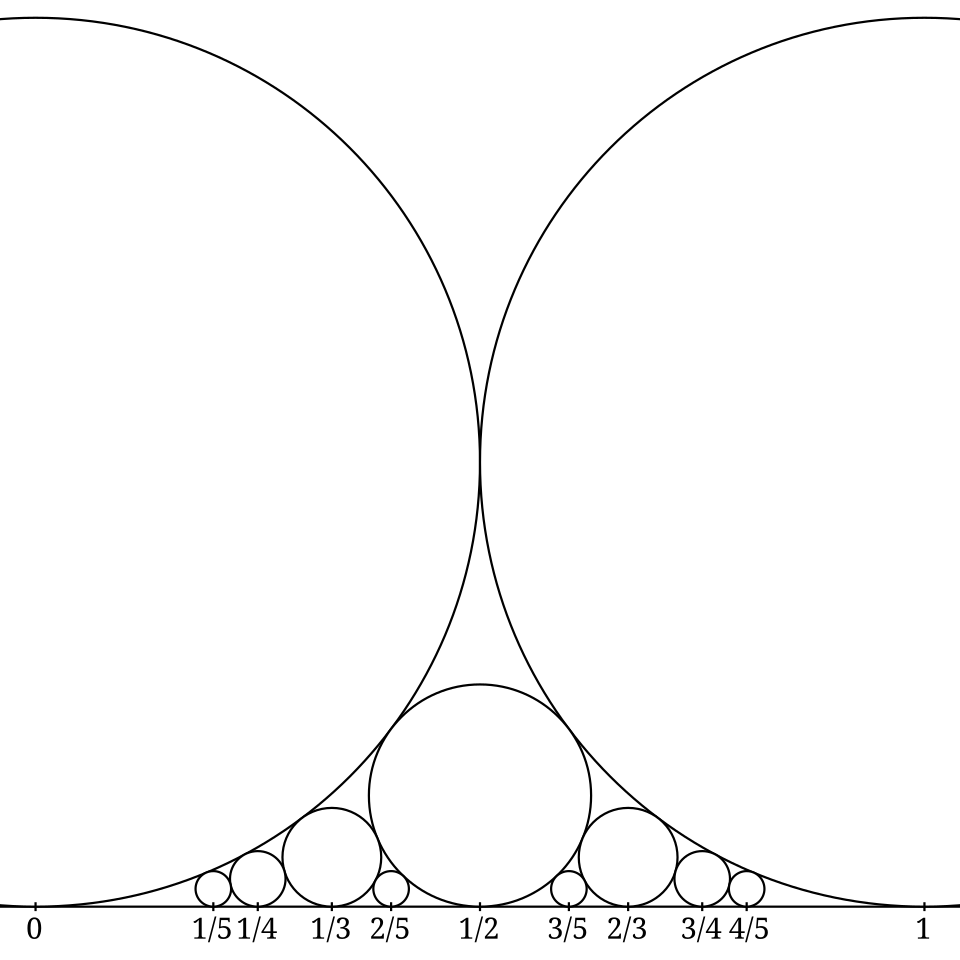
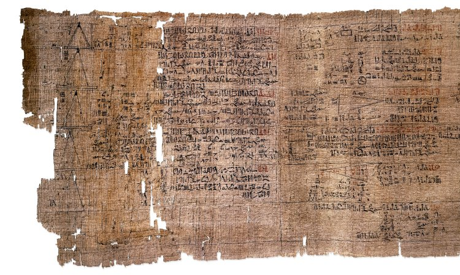

Frac(D) = (D × (D ∖ {0})) / ~ , (a, b) ~ (c, d) ⟺ ad = bc
x ∈ ℚ ⟺ the decimal expansion of x is eventually periodic
√2 = [1; 2, 2, 2, …], 3² − 2·2² = 1
The elementary theory of fractions is a set of rules for manipulating symbols a/b. The advanced theory asks what those symbols are, why the rules are forced upon us, and what the rational numbers reveal about the real numbers that surround them. The three lines above summarise the arc of this course. The first is the formal construction that turns any integral domain into a field, exactly as the integers are turned into the rationals. The second is a characterisation of ℚ inside ℝ by the behaviour of digit expansions, and the third is a glimpse of the theory of continued fractions, in which the arithmetic of a single irrational number such as √2 controls the integer solutions of the Diophantine equation x² − 2y² = 1.
The course assumes familiarity with the arithmetic of fractions, with proofs by induction and contradiction, with the basic vocabulary of rings and fields, and with elementary congruences. Everything else is developed from first principles. The style is that of a graduate text: definitions are stated precisely, theorems are proved in full unless explicitly labelled as a sketch, and historical and research context is given where it illuminates the mathematics.
The course falls into four parts. Lessons 1 to 3 are algebraic: the field of fractions, the ordered field ℚ, and the multiplicative arithmetic of ℚ through p-adic valuations. Lessons 4 to 6 study the rationals geometrically and combinatorially: positional expansions, Farey sequences and Ford circles. Lessons 7 to 9 belong to Diophantine approximation: continued fractions, Pell's equation, irrationality proofs and the approximation theorems of Dirichlet, Liouville and Roth. Lessons 10 to 12 return to algebra and number theory: partial fractions in a polynomial ring, Egyptian fractions and the open problems they generate, and finally the p-adic absolute values, which show that ℚ can be completed in infinitely many inequivalent ways.
In this course, you will:
- 1.Construct the field of fractions of an integral domain and prove its universal property
- 2.Characterise ℚ as the prime field of characteristic zero and as an Archimedean ordered field
- 3.Use p-adic valuations to analyse reduced forms, rational roots and harmonic numbers
- 4.Prove that the rationals are exactly the eventually periodic expansions and compute period lengths via multiplicative orders
- 5.Develop Farey sequences, mediants, the Stern–Brocot tree and Ford circles
- 6.Master continued fractions: convergents, best approximation, Lagrange's theorem and Pell's equation
- 7.Prove the irrationality of √2, e and π, and the approximation theorems of Dirichlet and Liouville
- 8.Prove existence and uniqueness of partial fraction decompositions over any field
- 9.Study Egyptian fractions, the greedy algorithm and the Erdős–Straus conjecture
- 10.Meet p-adic absolute values, the product formula and Ostrowski's theorem
- 11.Work 60 problems ranging from routine computation to research-flavoured proofs
How to use this course: the lessons are cumulative, and each opens with a key statement that the lesson then proves. The exercises inside the lessons are short checks of understanding; the problem set at the end is where the real work happens. Notation: for a prime p, vp denotes the p-adic valuation; ⌊x⌋ and ⌈x⌉ are the floor and ceiling; gcd and lcm are taken over the positive integers; φ is Euler's totient function; and ordn(a) is the multiplicative order of a modulo n.
Figures


Contents
The Field of Fractions of an Integral Domain Lesson 2
ℚ as an Ordered Field Lesson 3
Valuations, Reduced Forms and Rational Roots Lesson 4
Positional Expansions and the Order of 10 Lesson 5
Farey Sequences and the Stern–Brocot Tree Lesson 6
Ford Circles and the Modular Group Lesson 7
Continued Fractions and Their Convergents Lesson 8
Best Approximation, Quadratic Irrationals and Pell's Equation Lesson 9
Irrationality and Diophantine Approximation Lesson 10
Partial Fractions over an Arbitrary Field Lesson 11
Egyptian Fractions Lesson 12
p-adic Absolute Values and the Completions of ℚ Problem Set
60 problems Assessment
Randomly generated questions
Image sources
- Figure 1 · Ford circles. By Michael Hardy, Joriki and AnonMoos. Public domain. From Wikimedia Commons: https://commons.wikimedia.org/wiki/File:Ford_circles.svg
- Figure 2 · Rhind Mathematical Papyrus. By Ahmes (scribe); photograph British Museum. Public domain. From Wikimedia Commons: https://commons.wikimedia.org/wiki/File:Rhind_Mathematical_Papyrus.jpg